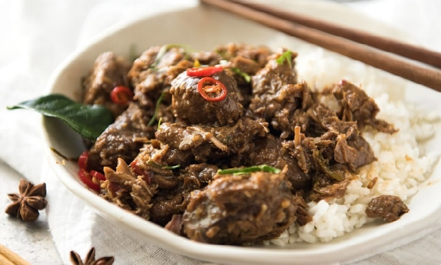
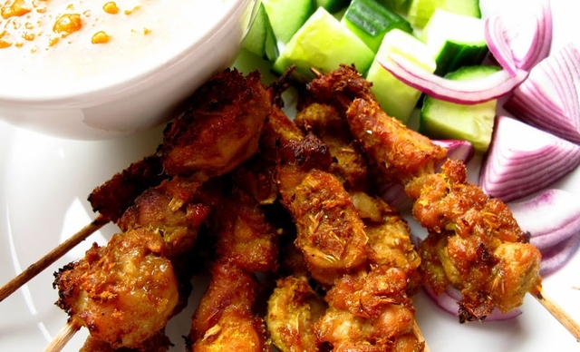
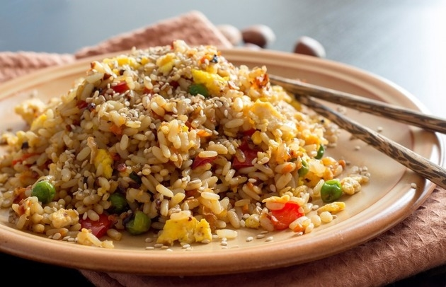
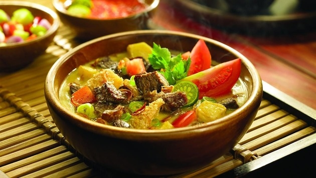
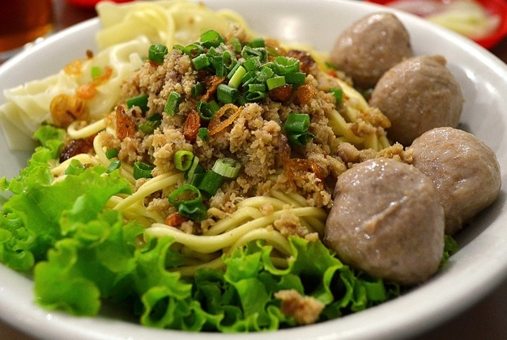
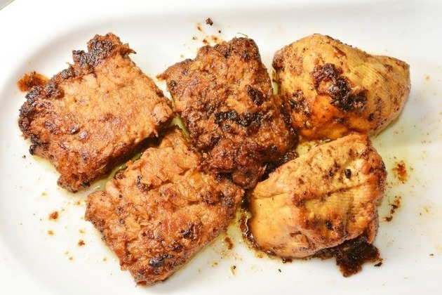
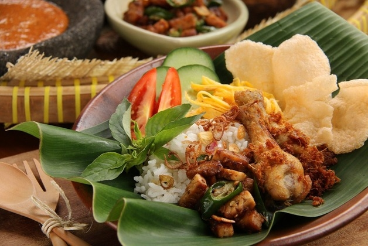
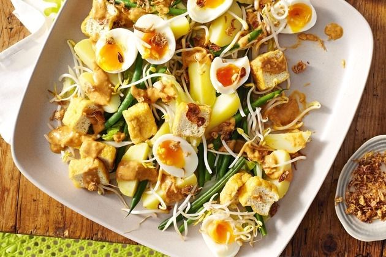
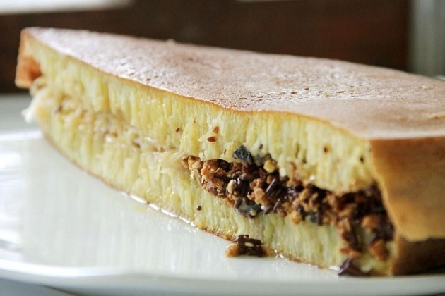
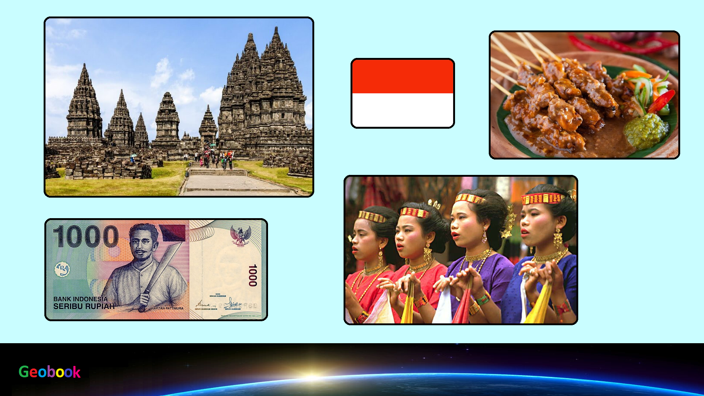

____
Традиционная еда
Говядина Ренданг (Beef Rendang) — Это индонезийское мясное блюдо готовится из мягчайшей говядины на очень медленном огне. Родиной Говядины Реданг считается Западная Суматра, однако, и в Индонезии она пользуется огромной популярностью как в больших ресторанах, так и в скромных кафе.

Сате (Satay, Sate) — это очень распространенное блюдо во всех частях индонезийского архипелага. В зависимости от локации ресторана, вы можете встретить разные вариации рецептов, отличающиеся в некоторых деталях. Чтобы Сате было действительно вкусным, для него отбирают свежайшее коровье или свиное мясо, куски рыбы или курицы. Далее порезанное небольшими кусочками мясо бережно нанизывают на шпажки и жарят на гриле до появления умопомрачительного аромата.

Жареный рис (Fried Rice) — Мы привыкли, что рис должен быть отварным, но индонезийцы нашли еще один вариант его приготовления. Местный Жареный Рис - это универсальное блюдо, которое можно найти в любом гастрономическом месте - от роскошных отелей до кибиток с уличной едой.

Сото (Soto) — Традиционный индонезийский суп Сото – очень пестрое, ароматное, насыщенное первое блюдо. Чтобы приготовить по-настоящему вкусный бульон, в воду добавляют мясо или курицу, а также обязательно - травы и специи. В некоторых частях Индонезии могут использовать разные травы и специи, однако общая специфика рецепта остается одинаковой.

Баксо (Bakso) — это индонезийские мясные шарики, очень похожие на наши фрикадельки. Они готовятся из говядины, однако, в некоторых местах вы можете встретить это блюдо из рыбы, курицы или свинины. Мясные шарики Баксо могут подаваться в самых разных вариациях – с пряным бульоном, рисовой лапшой, овощами, реже – с тофу или традиционными пельменями.

Темпе (Tempe) — это ферментированный соевый натуральным способом продукт, по форме напоминающий небольшое пирожное. Его можно жарить, готовить на пару или добавлять как ингредиент к блюдам местных рецептов. Так Темпе подается как удачное дополнение к рису или в виде самостоятельной закуски.

Наси Удук (Nasi Uduk) — Изюминкой блюда Наси Удук является рис, который готовят с кокосовым молоком и травами для создания ароматной основы блюда. Затем он подается с курицей или говядиной, яйцами и огурцом, украшенными жареным луком-шалот и керупуком (индонезийские крекеры). Рецепт Наси Удук пришел в Индонезию из Джакарты, где люди часто кушают его на завтрак, иногда даже на ходу.

Гадо-Гадо (Gado-Gado) — Этот экзотический индонезийский салат заправляется ароматным арахисовым соусом, а как основу имеет сырые или варенные овощи (капуста, салат, морковь, ростки фасоли), также - свежий жареный тофу и вареные яйца. Подается он традиционно с рисовыми лепешками или порцией обычного риса.

Мартабак (Martabak) — Вы можете встретить этот десерт во многих странах Азии, но в Индонезии он особенно популярен. Мартабак состоит из двух блинных слоев с различными начинками: шоколадом, сыром, орехами, молоком или даже со всем этим набором одновременно! Вы можете найти этот экзотический десерт у торговцев уличной еды и по полной насладиться его вкусом.

____
